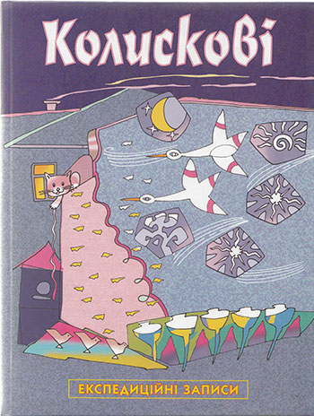

1. А, люлі (Закарпатська обл.) 2. А, люлі (Чернігівська обл.) 3. Ай, люлі (Вінницька обл.) 4. А люляй мі, люляй (Польща) 5. А ходить зайчик (Чернігівська обл.) 6. А, люлі (Хмельницька обл.) 7. А, коточку (Хмельницька обл.) 8. Ай люлі (Рівненська обл.) 9. Ай ну, спатки (Київська обл.) 10. Ай ну, коте (Київська обл.) 11. Ай ну, люлі дитя (Сумська обл.) 12. Ай-цю, люлю (Чернівецька обл.) 13. Богородице Мати (Черкаська обл.) 14. Боцян, боцян (Брестська обл.) 15. Гай та, люлю (Чернівецька обл.) 16. Гай цю, люлю (Чернівецька обл.) 17. Гойда, гойдаша (Київська обл.) 18. Гона, гонана (Львівська обл.) 19. Завішу я колисочку (Закарпатська обл.) 20. Їхав котик (Черкаська обл.) 21. Кицю моя, кицю (Київська обл.) 22. Киця мура (Хмельницька обл.) 23. Колисала баба (Львівська обл.) 24. Колисала баба (Вінницька обл.) 25. Коти з’їли барана (Київська обл.) 26. Котику біленький (Київська обл.) 27. Котику сіренький (Київська обл.) 28. Котів два (Вінницька обл.) 29. Кото коточок (Черкаська обл.) 30. Кото, коточок (Черкаська обл.) 31. Кото, коточок (Сумська обл.) 32. Коту котусю (Рівненська обл.) 33. Коте, кітку (Черкаська обл.) 34. Леле, леле, лелесенько (Вінницька обл.) 35. Люлечки, люлеки (Черкаська обл.) 36. Люлі, люлі (Брестська обл.) 37. Люлі, коточок (Черкаська обл.) 38. Люлі налетіли кури (Брестська обл.) 39. Люлі, люлі (Київська обл.) 40. Люлі, люлі, котино (Черкаська обл.) 41. Люлі, люліса (Вінницька обл.) 42. Люлі, люлечки (Сумська обл.) 43. Люлю, люлю (Вінницька обл.) 44. Люляй, люляй (Тернопільська обл.) 45. Ой люлі, люлесі (Черкаська обл.) 46. Ой ви, коти (Київська обл.) 47. Ой кіт воркіт (Київська обл.) 48. Ой коточок (Київська обл.) 49. Ой лю, люлі (Київська обл.) 50. Ой люлі, люлі (Волинська обл.) 51. Ой люлі, люлі (Вінницька обл.) 52. Ой люлі (Волинська обл.) 53. Ой люляй же мі (Польща) 54. Ой на кота – воркота (Київська обл.) 55. Ой ну, кицю (Київська обл.) 56. Ой ну, котку (Київська обл.) 57. Ой ну коту (Київська обл.) 58. Ой ну, люлі (Київська обл.) 59. Ой ну, люлі (Київська обл.) 60. Ой ну, котару (Черкаська обл.) 61. Ой повішу колисочку (Закарпатська обл.) 62. Ой спи, дитя (Вінницька обл.) 63. Ой ти, кіт (Полтавська обл.) 64. Ой ти, кіт-воркіт (Київська обл.) 65. Ой ти котику (Чернігівська обл.) 66. Ой ти, котку (Черкаська обл.) 67. Ой ходи сон (Вінницька обл.) 68. Ой ходив сон (Вінницька обл.) 69. Ой ходив сон (Вінницька обл.) 70. Ой ходив сон (Тернопільська обл.) 71. Ой ходит сон (Тернопільська обл.) 72. Ой ходит сон (Вінницька обл.) 73. Ой ходить сон (Брестська обл.) 74. Ой ходить сон (Львцівська обл.) 75. Ой ходить сон (Закарпатська обл.) 76. Ой ходить сон (Тернопільська обл.) 77. Ой ходить сон (Вінницька обл.) 78. Ой ходить сон (Черкаська обл.) 79. Ой ходить сон (Вінницька обл.) 80. Ой ходить сон (Вінницька обл.) 81. Пішла киця (Волинська обл.) 82. Пішла киця (Харківська обл.) 83. Пішов котик (Сумська обл.) 84. Повішу колиску (Вінницька обл.) 85. Повішу я колисойку (Закарпатська обл.) 86. Повішу, повішу (Закарпатська обл.) 87. Спи, дитино, спи (Львівська обл.) 88. Спи, Ісусе, спи (Тернопільська обл.) 89. Спи, дитинцю (Львівська обл.) 90. Спи, муй малий (Закарпатська обл.) 91. Усни, сине, усни (Закарпатська обл.) 92. Ходе сон (Хмельницька обл.) 93. Ходив котик (Брестська обл.) 94. Ходит сон (Тернопільська обл.) 95. Ходит сон (Вінницька обл.) 96. Ходит зайчик (м.Львів) 97. Ходит котко (Рівненська обл.) 98. Ходить сонко (Вінницька обл.) 99. Цюлю, чимирда (Тернопільська обл.)
Колискові. Марія Пилипчак
"Інтонація хорошої музики ― власної спадщини і класики ― гасить у дитини внутрішню агресію. Такі вібрації використовуються, щоб нова генерація була духовно здоровою."

У збірку увійшло близько ста народних колискових (слова і ноти), записаних автором у різних регіонах України. Вони представляють реальну живу традицію і можуть стати в нагоді молодим матерям та всім бажаючим вивчити цей сакральний пласт музично-поетичної культури українців. Книга адресована вихователям дошкільних закладів, вчителям музики, студентам дошкільних відділів педагогічних училищ та інститутів, матерям, науковцям та всім тим, кому не байдуже наше минуле, сучасне й майбутнє.
Українською мовою
Обкладинка: тверда палітурка
Формат: 196x258 мм
Кількість сторінок: 122, ілюстроване видання
Видавець: Задруга, Київ